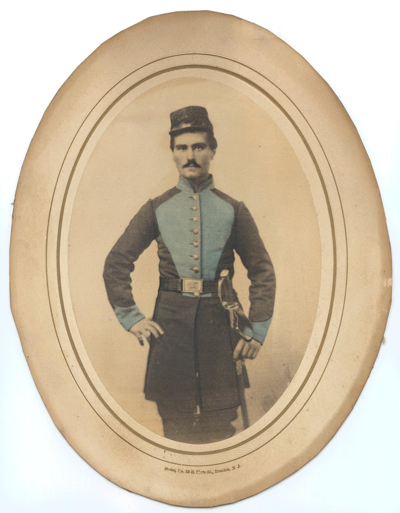

You are on the "old" eHistory pages: click here for the NEW eHistory site!

|
You are on the "old" eHistory pages: click here for the NEW eHistory site!
|
|
 |
 |
 |
 |
 |
 |
 |
| eHistory > American Civil War | Search |
| LETTERS & DIARIES |
|
Edward, George, and Samuel Fox 1861-1865

These letters were transcribed by David H. Fox, the great-grandson of Charles H. Fox, the recipient. The original spelling and usage has been retained. The letters were found in a cardboard writing box probably made by Charles, and similar to that mentioned in the letter of October 16, 1862. Charles eventually operated a bookbinding business in Trenton, New Jersey, and supplied the state government with ruled ledger books.
Comments may be sent to FOX11354@aol.com. Please state E-mail
subject.
Samuel Fox
SUMMARY
These letters were written to Charles H. Fox by his older brothers of Trenton, NJ, from 1861 to 1865. The brothers and other children were orphaned by the death of their widowed father in 1857, and raised by relatives. Charles was living with his Uncle Ralph, Aunt Mary, and Grandmother of Newark, NJ.
The correspondence begins in the fall of 1861 with Samuel and Edward Fox in the 6th New Jersey Volunteers stationed near Washington, DC. Samuel is a drummer. The brothers send money to support their younger brother Joseph Fox who is boarding with Nancy, then sister Annie Fox Grey, in Trenton, NJ. He does not attend school on a regular basis to the annoyance of his brothers. Another brother, George Fox becomes unemployed and joins the regiment as a drummer in early 1862. Drummers do not carry rifles and are spared some of the fighting.
The expectation of a short war eventually fades and is replaced by realization of the hardships of war. Samuel dies of illness in September, 1862. Edward despairs of his situation and obtains a medical discharge in February, 1863. He returns to Trenton, NJ, leaving George the lone family member in the army. The soldiers are not paid regularly and sometimes fed poorly. They are subject to being outside in all kinds of weather and endure long marches and the dangers of battles. At times, George feels that his family does not remember him by writing often enough. George is particularly annoyed with Edward who seeks employment in Hartford, CT, in December, 1863. Charles considers enlisting, but both George and Edward dissuade him. Edward returns to Trenton and joins the Invalid Corps in Trenton in August, 1864. By this time, there is optimism that the War may end soon. George's Company A, 6th Regiment is reorganized as Company E of the 8th New Jersey Volunteers in October, 1864. Edward's unexpected marriage at this time provokes sarcastic comments from George. With the end of the war, George's unit is stationed at Washington for several months, but he finally returns to Trenton in July 1865.
Family Record [from a document found with the letters]
Adaline Porter Dearth (1817- 11 May 1854) and Samuel Matson Fox (1812-20 July 1857) were married 31 Oct. 1836. Their children:
George Washington Fox----born 24 Feb. 1838
Samuel Matson Fox----born 27 Feb. 1840
Edward Ingleton Fox----born 25 Aug. 1842, died Sep. 1862
Charles Hinkle Fox----born 6 Feb. 1845, died 25 Nov. 1922
Anna Hinkle Fox----born 6 Feb. 1845
Joseph Hern Fox----born 24 July 1848
Adaline Hayter Fox----born 27 Apr. 1853
Other relatives mentioned are Uncle Charles, Uncle John, and (maternal) Aunt Ann, all of Trenton, NJ, and Aunt Mary, Uncle Ralph, and Grandmother of Newark, NJ.
Copyright © 1999
[ 1861
1862
1863
1864
1865
Main
]
| LETTERS & DIARIES |
|
|
All images and content are the property of eHistory at The Ohio State University unless otherwise stated. Copyright © 2006 OSU Department of History. All rights reserved. |